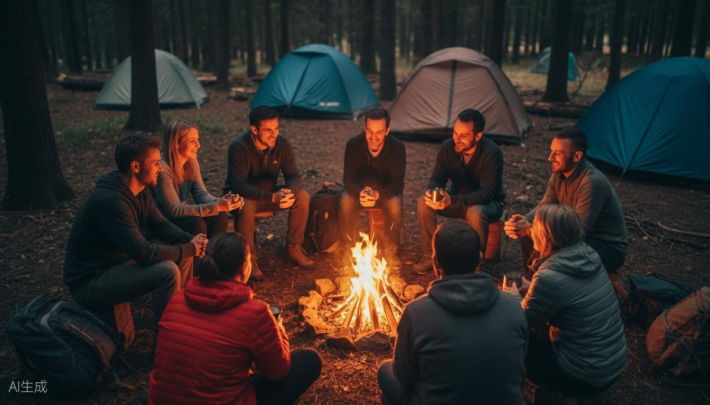

Fuoco
- Accenderlo con le mani
- Come affronti le difficoltà
Dalla sopravvivenza alla convivenza.
Tre giorni in cui gli elementi diventano porte per guardarti dentro: fuoco, acqua, buio, riparo, cibo, terra. Non per sopravvivere — per convivere.


Vivi in emergenza costante. Sprint, scadenze, tensione. Ti dici: «appena finisce questo periodo…». Ma quel periodo non finisce mai.
Elementi di Convivenza ti fa scoprire che esiste un’altra modalità. Non sopravvivere: convivere. Con te stesso, con gli altri, con il mondo.
Fuoco, acqua, buio, riparo, cibo, terra: ogni elemento è uno specchio.


Fuoco, acqua, riparo, orientamento: non prove di resistenza, ma specchi. Così torni più indipendente, con meno distanza tra te e la natura, di nuovo in contatto con gli elementi.
Accenderlo a ogni costo, in fretta, con la paura che si spenga.
Prepararlo con cura. Il fuoco non è tecnica: è presenza.
Controllare, accumulare, temere che non basti.
Cercarla senza fretta e fidarsi di ciò che non si controlla.
Difendersi dal bosco, chiudersi, fare da soli.
Costruirlo insieme: si vede come si decide, chi guida, chi ascolta.
Correre verso il prossimo obiettivo, vivere sempre nel futuro.
Fermarsi e leggere la bussola interna: dove sei, adesso.
Diventare indipendenti in natura toglie strato dopo strato anche dentro. Non per resistere: per lasciarsi andare.
Gruppo piccolo e intimo, 6–8 persone. Posti limitati.
Non ancora recensioni: esempi di ciò che un’esperienza così può lasciare.
Gruppo piccolo e intimo.
Date indicative, da confermare. Scrivimi per conoscere il weekend esatto e la disponibilità.
La modalità emergenza è una scelta.
La convivenza, anche.
Scrivimi: ti dico il prezzo e cosa è incluso in base alla data e al formato. Gruppi piccoli, posti limitati.
No. Non servono abilità tecniche: gli elementi sono strumenti di consapevolezza, non prove da superare.
No. Non impari tecniche estreme: fuoco, acqua, buio e riparo sono specchi, non abilità da acquisire.
No. Non analizziamo il passato: facciamo esperienze e osserviamo cosa emerge.
No. È intenso: non torni rilassato come da una spa, ma con una consapevolezza diversa.
Esperienza di puntaDue giorni nel selvatico, da sabato mattina a domenica pranzo: cammino, orientamento, fuoco, notte nel bosco. Il weekend di punta.
Scopri di piùL’archetto come specchio: guardi come reagisci quando qualcosa non viene subito. Torni con un’azione, non un’idea.
Scopri di più
Scrivimi e raccontami da dove parti. Capiamo insieme se questo weekend fa per te.